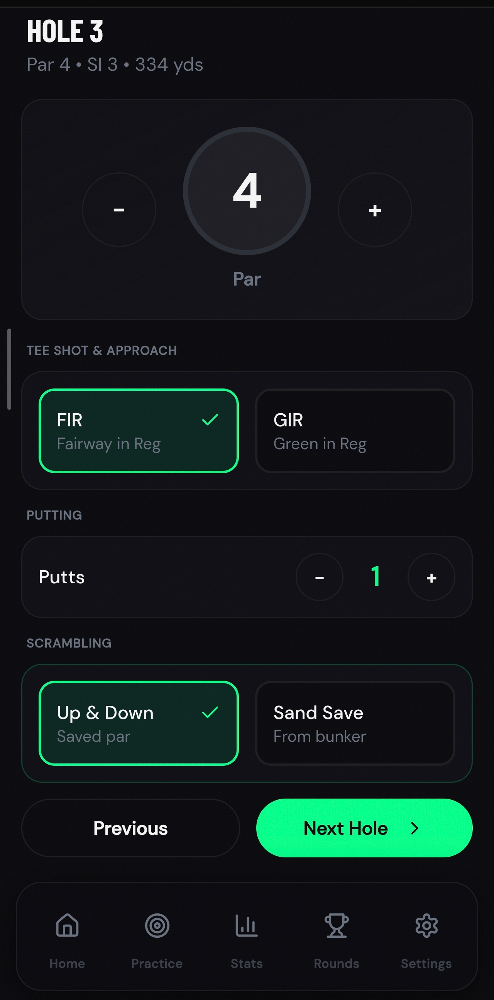
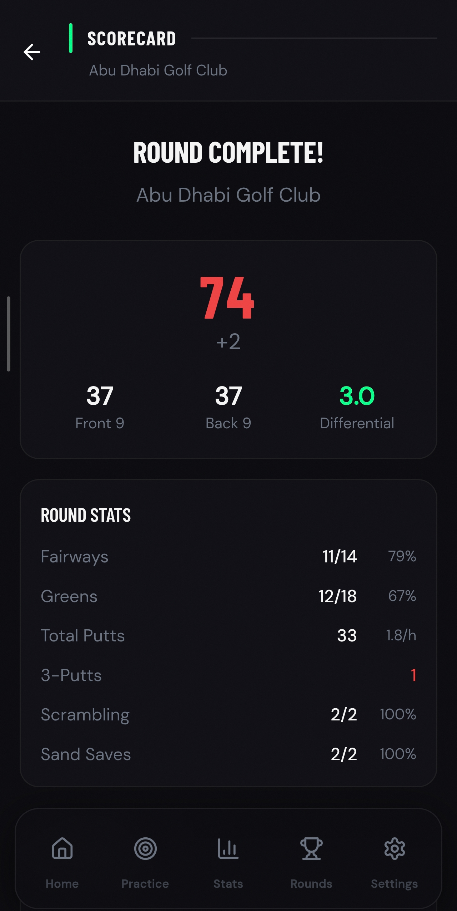
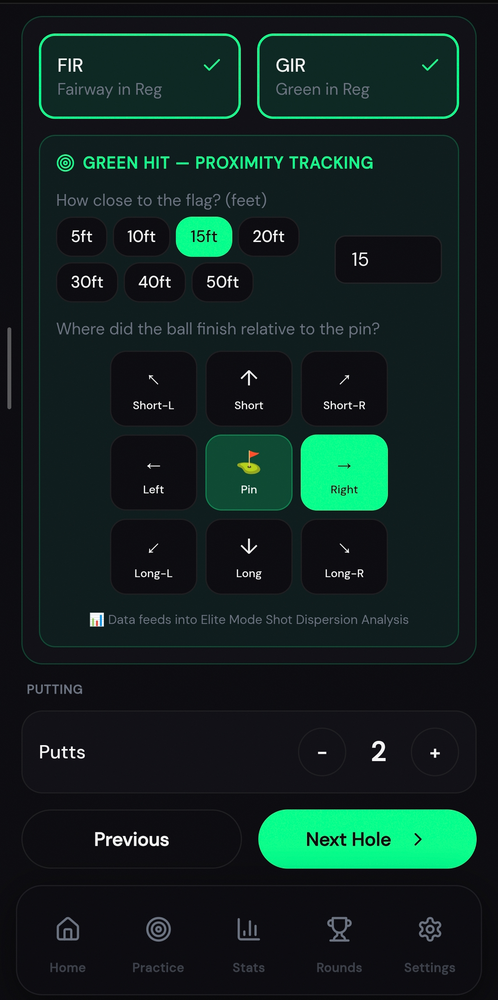

Stop guessing. Start knowing. Stat tracking that gives you a clear picture of your weaknesses so every practice session is pointed at the right problem.
Log your rounds, analyse your short game, and let Scoring Zone turn your stats into a focused plan for improvement.

If you've ever wondered how to lower your golf scores, the answer isn't more range time — it's knowing where you're actually losing strokes. Most golfers finish a round, add up the scorecard, and move on. No record of what went wrong. No way to spot patterns. No idea whether it's the short game, the putting, or the tee shots that are costing them the most.
Without data, every practice session is a guess. With it, every session has a purpose.
Most golfers practise what they enjoy, not what they need. Without data, it's almost impossible to know the difference.
If your GIR rate is strong but your up-and-down percentage is poor, more time on the range won't help — but thirty focused minutes on chipping drills will. If your short game is solid but your putting stats reveal a high three-putt rate, a structured putting session will do more for your scorecard than anything else.
The golfers who improve fastest aren't the ones who work hardest — they're the ones who work on the right things. A golf stat tracking app makes sure every session is pointed at the problem that's actually costing you strokes.

Whether you track live or log after the round, Scoring Zone gives you usable stats every time.
Select your course, choose your tees, and record full stats hole by hole as you play — including up and downs, greens in regulation, sand saves, and proximity to the hole. Every round becomes a complete performance breakdown you can act on.
Played a round and didn't track live? No problem. Enter your score after the round and still get the key stats that matter. Fast to log, still genuinely useful.
Every course in the world is available for selection — from courses in California to Western Ireland to Central Asia. Wherever you play, Scoring Zone tracks it.
A complete golf scoring app that turns round data into improvement.
See exactly which part of your game is costing you strokes against your handicap. Golf strokes gained data cuts through the noise and tells you where improvement will have the most impact.
Up-and-down percentage, sand save rate, proximity to the hole — individual short game statistics displayed per round and tracked over time.
Putts per round, putts per GIR, three-putt rate. Know exactly whether it's your lag putting or your short putts that are adding strokes.
Hole-by-hole breakdowns, scoring patterns, and performance trends across multiple rounds. See how you perform under pressure and from different tees.
Track your performance on every course you play. See scoring trends, identify which courses suit your game, and benchmark progress on the tracks you play most.
Your handicap index updates automatically as rounds are logged. Watch it fall as your stats improve — a single number that reflects everything you've put into your game.

New to tracking golf stats? Start with the basics and build from there.
Simple round entry, automatic stat calculation, and a clear overview that shows where you're losing shots — no prior tracking experience needed.
Dig into your up-and-down percentage, GIR rate, and putting stats round by round. Spot the recurring weaknesses that are quietly adding strokes to every scorecard.
Strokes gained analysis, proximity data, scoring trends, and benchmarks against scratch-level performance. For golfers who want every decision backed by data.
Turn Your Stats Into Action
Your stats showing a weak up-and-down percentage? Scored chipping challenges for every lie and distance will fix it.
FeatureHigh three-putt rate? Structured putting practice with scored ladder drills and pressure putts will bring it down.
FeatureLet your round stats build your next practice session automatically — drills, targets, and time splits tailored to your weaknesses.
FeaturePressure tests that simulate tournament conditions — timed challenges, elimination rounds, and scored benchmarks.
FeatureTour-level analytics, strokes gained tracking, and pro benchmarks — the data layer that turns good golfers into data-driven ones.
Join golfers already using Scoring Zone as their golf improvement tracker — logging rounds, finding weaknesses, and practising with purpose. One round of data is all it takes to start.
Start Tracking Free